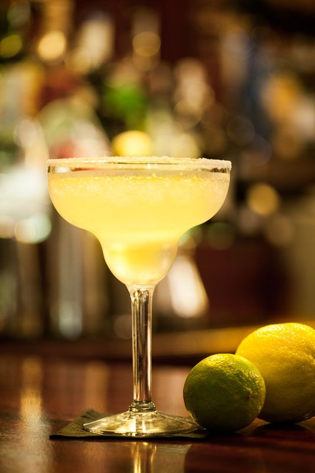
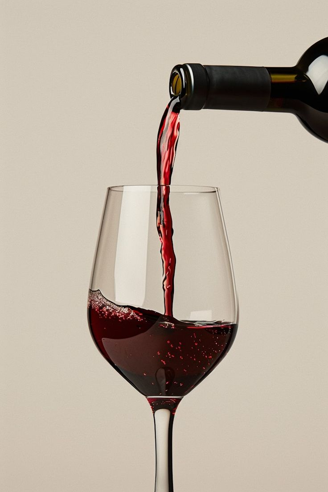
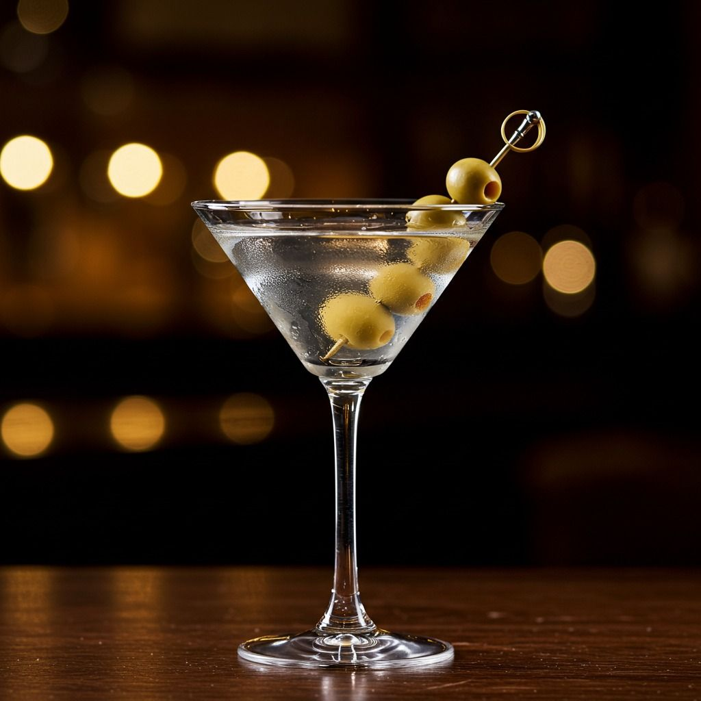
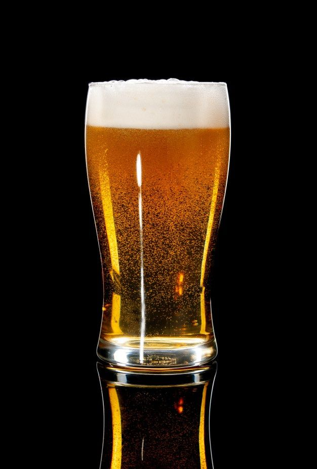
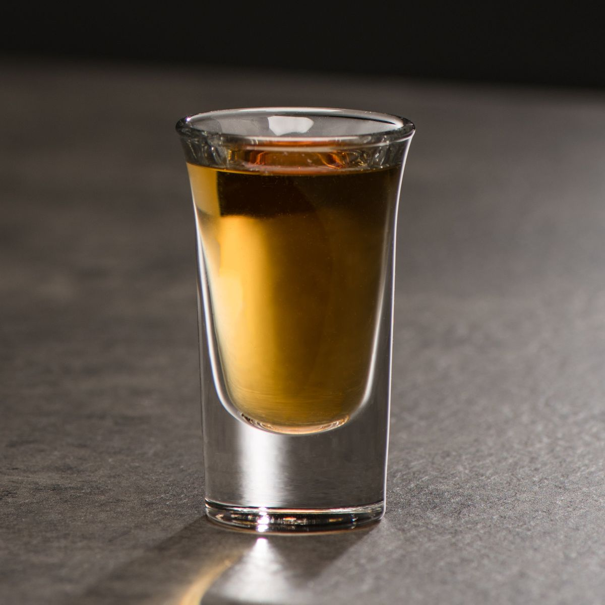

Cristaleria
La cristalería se define como el conjunto de objetos fabricados en vidrio o cristal, diseñados principalmente para contener, servir o consumir bebidas y, en algunos casos, alimentos. Incluye copas, vasos, jarras, decantadores, botellas, copones y otros recipientes similares. En el ámbito gastronómico y de la coctelería, la cristalería se clasifica según la función de cada pieza (copas de vino, de champagne, vasos de whisky, de cócteles, etc.), ya que la forma y el tamaño influyen en la experiencia sensorial de la bebida. A continuacion reparasaremos estos tipos de cristaleria epecificaemnte habalnado de los vasos que u tilizamos usualmente para los cocktails.
Copa Margarita
El vaso copa Margarita es un tipo de cristalería diseñada específicamente para servir el cóctel Margarita, aunque también se utiliza en otros tragos frutales, frozen o presentaciones tropicales. Tiene una copa ancha y poco profunda, con forma de "sombrero mexicano" o de “reloj de arena invertido”, el borde amplio facilita la decoración con sal o azúcar, clásica en la Margarita y suele tener un tallo largo Capapcidad: 150 a 300 ml Usos: Cóctel Margarita (clasico o frozen), Daiquiris frozen y tragos tropicales o frutales con decoracion vistosa


Copa Vino Tinto
Cuerpo redondeado, tallo medio-largo. La de tinto es más ancha para oxigenar; la de blanco más cerrada para conservar aromas y temperatura. Capacidad: 150 a 450 ml. Usos: Vinos, sangrías, spritzers.
Copa Flauta
Estrecha, alargada y alta, con tallo largo. Su forma conserva el gas y permite apreciar las burbujas. Capacidad: 150 a 200 ml. Usos: Champagne, espumantes, cócteles tipo Mimosa o Bellini.
Chope
Vaso grueso de vidrio con asa, pensado para mantener la cerveza fría y soportar el golpeo del brindis. Capacidad: 300 a 500 ml (según el modelo). Usos: Cerveza tirada o de botella.
Copa Cóctel
Cono invertido, tallo largo, boca ancha. Clásica para cócteles directos y elegantes. Capacidad: 150 a 250 ml. Usos: Martini, Cosmopolitan, Manhattan, entre otros.

Vaso Bajo
Bajo, ancho y de vidrio grueso. Ideal para cócteles con hielo sólido o “on the rocks”. Capacidad: 180 a 300 ml. Usos: Old Fashioned, Negroni, whisky con hielo.
Vaso Pinta
Cilíndrico, alto y sin asa. Tradicional para cervezas. Puede ser inglesa (568 ml) o americana (473 ml). Capacidad: 473 a 568 ml. Usos: Cervezas y cócteles con mucho líquido.

Trago Largo
Alto, recto y de vidrio fino. Permite tragos largos con mixers. Capacidad: 250 ml hasta 400 ml. Usos: Cuba Libre, Fernet con cola, Gin Tonic, Mojito.
Shot Glass o “Chupito”
Pequeño, cilíndrico, pensado para beber de un trago. Capacidad: 25 a 60 ml. Usos: Tequila, vodka, licores, degustaciones.
